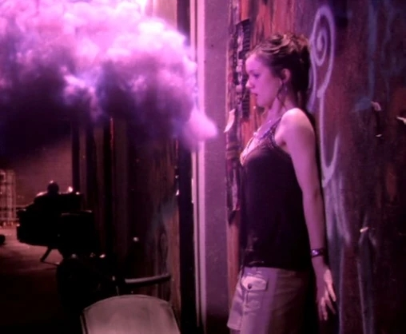

Эра Десятого Доктора
<<< НАЗАД ||| 2. День первый ||| ДАЛЬШЕ >>>
MVO [Sony Sci-Fi], MVO [ТВ-3], VO [BMWmaximus]
+ Original [ENG]
Субтитры: Русские
 | Весь 1-й сезон (13 серий) |
Day One
Дата выхода: 22 октября 2006
Формат: 50-минутный эпизод
| Варианты озвучек: | * Разные: смотрите по инструкции |
|---|---|
| Скачивание и просмотр: |
Первый день для Гвен становится весьма насыщенным. Она случайно выпускает на волю существо, которое питается энергией оргазма, оставляя от своих жертв лишь пыль. Торчвуд должен поймать пришельца и спасти невинных людей.

